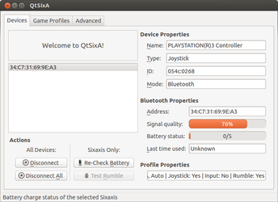

PS3 Controller
Dieser Artikel wurde für die folgenden Ubuntu-Versionen getestet:
Ubuntu 14.04 Trusty Tahr
Zum Verständnis dieses Artikels sind folgende Seiten hilfreich:
| PS3-Controller |
Manche werden schon einmal einen Playstation Controller in den Händen gehabt haben, da es diesen bereits seit dem Jahr 1994 gibt. Inzwischen ist dieser Controller veraltet, und es gibt den neuen Sixaxis Wireless Controller. Der Artikel beschäftigt sich damit, wie man diesen Controller über Bluetooth mit dem Computer verbinden kann.
Der PS3-Controller ist unter Linux eigentlich sofort funktionsfähig. Man muss einfach den Controller per USB-Kabel anschließen und den PS-Knopf (die mit dem Play-Station-Zeichen versehene Schaltfläche in der Mitte des Controllers) drücken. Allerdings ist es so nicht möglich, alle Funktionen des Controllers zu benutzen: die LEDs werden weiterhin blinken, und die Accelerometers sowie die Rumble-Funktion werden nicht funktionieren.
QTSixA  ermöglicht nun durch die Implementierung eines angepassten Treibers, diese Funktionen zu benutzen. Die Anwendung bietet eine grafische Oberfläche für das Kommandozeilenprogramm sixad, welches eine Anwendung darstellt, um PlayStation-3-Hardware unter Linux verwenden zu können. Sixaid liefert einen Support für folgende Hardware:
ermöglicht nun durch die Implementierung eines angepassten Treibers, diese Funktionen zu benutzen. Die Anwendung bietet eine grafische Oberfläche für das Kommandozeilenprogramm sixad, welches eine Anwendung darstellt, um PlayStation-3-Hardware unter Linux verwenden zu können. Sixaid liefert einen Support für folgende Hardware:
Sixaxis/DualShock 3 (Tasten, Achsen, Accelerometers, LEDs und Rumble/Zittern)
PS3 Keypads
PS3 Fernbedienung (PS3 BD Remotes)
PS3 Keynote 3in1
| Übersicht über die Funktionen von sixad | |
| Programm | Erklärung |
| hidraw-dump | Dieses Programm liefert Eingabeinformationen von der Hardware. |
| sixpair | Verbindet den Sixaxis (PS3-Controller) mit dem Bluetooth-Adapter des PC's. Die PS3 Remote benötigt dies nicht. |
| sixad-jack | Ermöglicht einen Sixaxis (PS3-Controller) als MIDI-Keyboard zu verwenden. |
| sixad-raw | Ermöglicht einen neuen Joystick über ein Sixaxis-Hidraw-Interface zu registrieren. |
| sixad-3in1 | Ermöglicht das Verwenden des PS3 Keynote 3in1 als Maus-/Tastatur-Ersatz. |
Installation¶
Möchte man den PS3-Controller per Bluetooth verbinden, benötigt man das Programm QTSixA . Dazu muss man ein "Personal Package Archiv" (PPA) [1] einbinden.
Adresszeile zum Hinzufügen des PPAs:
ppa:falk-t-j/qtsixa
Hinweis!
Zusätzliche Fremdquellen können das System gefährden.
Ein PPA unterstützt nicht zwangsläufig alle Ubuntu-Versionen. Weitere Informationen sind der  PPA-Beschreibung des Eigentümers/Teams falk-t-j zu entnehmen.
PPA-Beschreibung des Eigentümers/Teams falk-t-j zu entnehmen.
Damit Pakete aus dem PPA genutzt werden können, müssen die Paketquellen neu eingelesen werden.
Nach dem Aktualisieren der Paketquellen kann man QTSixA installieren [2]:
qtsixa (ppa)
 mit apturl
mit apturl
Paketliste zum Kopieren:
sudo apt-get install qtsixa
sudo aptitude install qtsixa
Einrichten der Verbindung¶
Hinweis:
Diese Funktionen werden auch alle von QTSixA bereitgestellt. Aufgrund von Komplikationen sollte dennoch der hier beschriebene Weg zum Einrichten der Bluetooth-Verbindung befolgt werden.
Zuerst verbindet man den PS3-Controller per USB-Kabel mit dem PC. Jetzt sollte man die LEDs auf der Rückseite des Controllers aufblinken sehen. Danach startet man ein Terminal [4] [5] und gibt diesen Befehl ein:
sudo sixpair
Die Ausgabe sollte etwa so aussehen:
Current Bluetooth master: xx:xx:xx:xx:xx:x Setting master bd_addr to aa:aa:aa:aa:aa:aa
Jetzt kann das USB-Kabel wieder vom Controller entfernt werden. Möchte man mehrere Controller verwenden, muss man diesen Schritt mit allen Controllern wiederholen.
Danach führt man diesen Befehl aus:
sixad --start
Die Ausgabe sollte etwa so aussehen:
sixad-bin[7068]: started sixad-bin[7068]: sixad started, press the PS button now
Jetzt muss der PS-Knopf gedrückt werden. Die Terminalausgabe sollte nun etwa so aussehen:
sixad-sixaxis[7079]: started sixad-sixaxis[7079]: Connected 'PLAYSTATION(R)3 Controller (xx:xx:xx:xx:xx:xx)' [Battery 05]
Die Verbindung ist nun hergestellt. Möchte man mehrere Controller hinzufügen, reicht es hier, bei allen Controllern einfach den PS-Knopf zu drücken. Es ist aber, wie oben schon erläutert, notwendig jedes Gerät zuerst mit dem USB-Kabel zu verbinden und mit dem Befehl sudo sixpair die Controller mit dem Bluetooth-Gerät zusammen zu führen. Um in Zukunft die Verbindung herzustellen, reicht es ab dem Befehl sixad --start dieser Anleitung fortzufahren.
Möchte man sixad nicht jedes Mal manuell starten, kann man es mit folgendem Befehl beim Hochfahren des Systems automatisch starten lassen:
sixad --boot-yes
Mit folgendem Befehl kann man das automatische Starten wieder beenden:
sixad --boot-no
|  |
| Konfiguration |
Konfiguration des Controllers¶
Nun kann das Programm QTSixA gestartet werden, womit es möglich ist, den PS3-Controller zu konfigurieren.
| Übersicht über die Konfiguration | |
| Reiter | Erklärung |
| "Devices" | Unter dem Reiter "Devices" verfügt der User über eine Liste der angeschlossenen PS3-Hardware. Dort kann er Informationen über jedes Gerät sowie über dessen Bluetooth-Einstellungen erhalten. Zusätzlich ist es möglich einzelne oder die gesamten Verbindungen zur PS3-Hardware aufzuheben. Für den Sixaxis-Controller gibt es zusätzlich noch die Möglichkeit, den Batterie-Status zu ermitteln und die Rumble-Funktion zu testen. |
| "Game Profiles" | Möchte man nicht die standardmäßige Konfiguration (Tasten- bzw. Achsenbelegung) des Sixaxis-Controllers verwenden, sondern für ein bestimmtes Spiel eine andere Belegung benutzen, kann man dies unter diesem Reiter verwirklichen. Dabei dient der Reiter für die Auswahl der Möglichkeiten von den Profilen, die der Nutzer vorher über "Settings -> Manage Devices/Profiles -> Input Profiles" editieren und hinzufügen kann. |
| "Advanced" | Unter dem Reiter "Advanced" ist es möglich bestimmte Signalstärken mit bestimmte Aktionen, dazu gehören z.B. Shell- bzw. Bash-Kommandos, zu koppeln. Zusätzlich bietet der Reiter Optionen an, den PS3-Controller per USB mit dem sixad-Treiber zu verbinden und somit die PS3-spezifischen Funktionen des Controllers auch über USB zu nutzen. |
Für über diese Erläuterungen hinausgehende Informationen kann das Handbuch  im PDF-Format zu Rate gezogen werden.
im PDF-Format zu Rate gezogen werden.
Verwendung mit Steam¶
Mit dem PS3-Controller ist die Verwendung von Steam problemlos möglich. Falls Komplikationen auftreten, empfiehlt es sich den Controller über den Big-Picture-Mode zu konfigurieren und die Spiele auch aus diesem Modus heraus zu starten. Siehe Steam.
Problembehebung¶
Sollten Fehlermeldungen auftauchen, kann man versuchen das Bluetooth-Gerät zurückzusetzen. Eine Fehlermeldung könnte so aussehen:
Current Bluetooth master: 00:1b:dc:00:07:3c Unable to retrieve local bd_addr from `hcitool dev`. Please enable Bluetooth or specify an address manually.
Der Befehl setzt das Bluetooth-Gerät in seinen Ursprungszustand zurück:
sudo hciconfig [DEVICE] reset
Das verwendete Gerät kann man erfahren, indem man den Befehl aufruft:
hcitool dev
Informationen des Bluetooth-Sticks kann man über diesen Befehl erhalten:
hciconfig -a
Die Ausgabe sollte in etwa so aussehen:
hci0: Type: BR/EDR Bus: USB BD Address: 00:02:72:BF:F3:EF ACL MTU: 1022:8 SCO MTU: 121:3 UP RUNNING RX bytes:934 acl:0 sco:0 events:36 errors:0 TX bytes:634 acl:0 sco:0 commands:36 errors:0 Features: 0xff 0xfe 0x0d 0xfe 0x98 0x7f 0x79 0x87 Packet type: DM1 DM3 DM5 DH1 DH3 DH5 HV1 HV2 HV3 Link policy: RSWITCH HOLD SNIFF Link mode: SLAVE ACCEPT Name: 'Azure:Feb 20 2012,03:23:11' Class: 0x000000 Service Classes: Unspecified Device Class: Miscellaneous, HCI Version: 3.0 (0x5) Revision: 0x9999 LMP Version: 3.0 (0x5) Subversion: 0x9999 Manufacturer: Atheros Communications, Inc. (69)
Sollte bei dem Gerät z.B. Down stehen, kann das Gerät mit diesem Befehl gestartet werden:
sudo hciconfig [DEVICE] up
Auch dieser Befehl kann helfen:
sudo /etc/init.d/bluetooth restart
 Übersichtsartikel
Übersichtsartikel- Erstellt mit Inyoka
-
 2004 – 2017 ubuntuusers.de • Einige Rechte vorbehalten
2004 – 2017 ubuntuusers.de • Einige Rechte vorbehalten
Lizenz • Kontakt • Datenschutz • Impressum • Serverstatus -
Serverhousing gespendet von